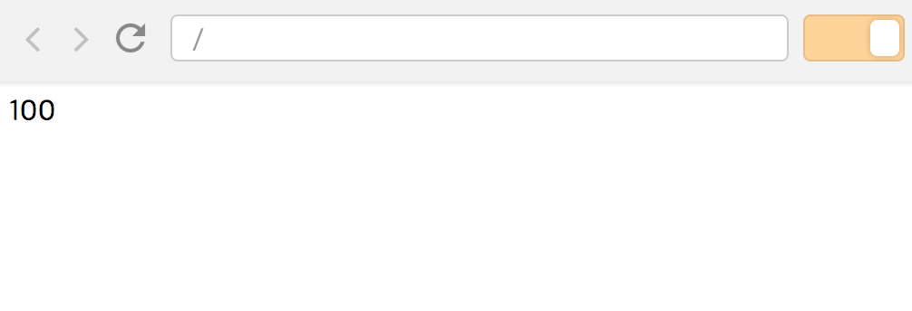

숫자가 0~100까지 순서대로 변하는 예제를 만들어볼 것이다.
일단 예제 파일에 쓰일 index.html을 하나 만들어보자.
이제 index.js 파일을 만들자.
1~10까지 출력이니 반복문을 쓰면 될 것 같다.
아래와 같이 콘솔창에 찍어보면 1~10까지 아주 잘 나온다.
|
|
이제 실제 DOM에다 렌더링 시켜보자.
예제 보기
숫자를 보여줄 때 그냥 보여주기만 하면 재미 없죠?
한 번 쯤은 0~100까지 숫자가 순차적으로 올라가면서 보여주면
더 역동적일 것 같다고 생각해보신 적들 있을 겁니다.
저도 같은 생각을 해보며 글을 작성해보았습니다.
콜백 함수, Promise, Async
|
|
결과를 확인하면 너무 한 순간에 값이 바뀌어서 눈으로 확인이 불가능할 정도다.
그렇다면 setTimeout으로 딜레이를 걸어보자!
예제 보기
|
|
하지만 위의 결과도 우리가 원하던 결과가 아니다.
100ms 동안은 가만히 있지만 그 이후에 함수가 물밀듯 실행한다.
setTimeout 함수는 동기식으로 동작하는 게 아니라 비동기 식으로 동작하기 때문이다.
이를 위해서 우리에겐 콜백 함수란 게 존재한다!
예제 보기
|
|
코드가 보기 좋은가?
이를 위한 대안으로 ES2015에 나온 Promise를 써보자.
예제 보기
|
|
뭐 썩 보기 좋은 건 아니지만 콜백 함수 지옥에 비하면 훨씬 봐주기가 좋아졌다.
하지만 숫자를 1~10이 아닌 100까지 표현해야한다면…?
저걸 100줄을 쓰고 있어야한다.
그럼 이제 남은 방안은 ES2017의 async/await가 있다!
예제 보기
|
|
하지만 async/await와 Promise를 학습하는 것은 어느 정도 러닝 커브가 있다.
한번 내가 만들어본 async-to-sync 라이브러리를 이용하여 바꿔보자.
예제 보기
더 쉬운 방법
역시 구글링을 해보니 더 쉬운 방법이 존재하였다.
왜 이런 뻘짓을 했는지…